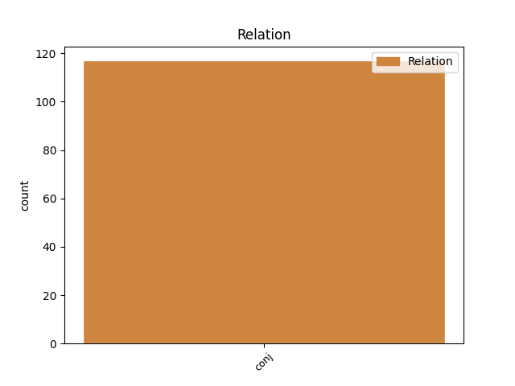
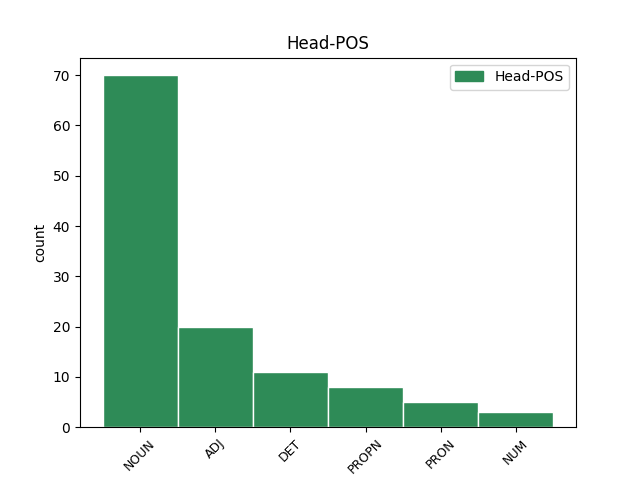
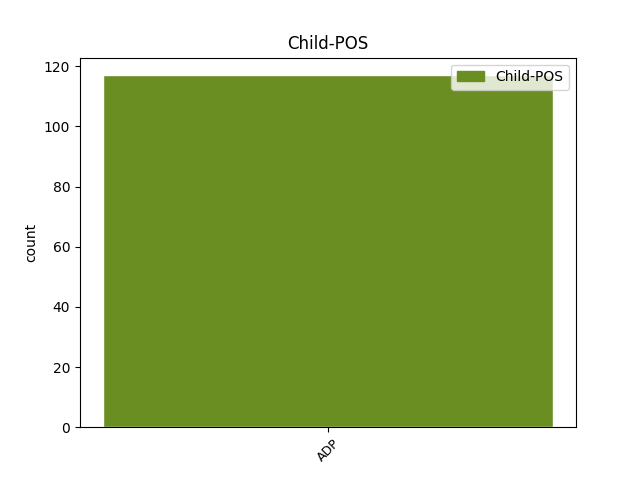

Distribution of features within this leaf



Agreement Rules sorted by frequency.
- When the dependent token is the conjunct(conj) of the head token, and the head token is NOUN and the dependent token is ADP.
1 Třicet _ _ _ _ 0 _ _ _
2 let _ _ _ _ 0 _ _ _
3 , _ _ _ _ 0 _ _ _
4 která _ _ _ _ 0 _ _ _
5 uplynula _ _ _ _ 0 _ _ _
6 od _ _ _ _ 0 _ _ _
7 osvobození _ _ _ _ 0 _ _ _
8 naší _ _ _ _ 0 _ _ _
9 země _ _ _ _ 0 _ _ _
10 v _ _ _ _ 0 _ _ _
11 roce _ _ _ _ 0 _ _ _
12 # _ _ _ _ 0 _ _ _
13 , _ _ _ _ 0 _ _ _
14 nás _ _ _ _ 0 _ _ _
15 nutí _ _ _ _ 0 _ _ _
16 k _ _ _ _ 0 _ _ _
17 zamyšlení _ _ _ _ 0 _ _ _
18 nad _ _ _ _ 0 _ _ _
19 tím _ _ _ _ 0 _ _ _
20 , _ _ _ _ 0 _ _ _
21 jak _ _ _ _ 0 _ _ _
22 se _ _ _ _ 0 _ _ _
23 fyzika _ _ _ _ 0 _ _ _
24 v _ _ _ _ 0 _ _ _
25 Československu _ _ _ _ 0 _ _ _
26 vyvíjela _ _ _ _ 0 _ _ _
27 a _ _ _ _ 0 _ _ _
28 čím _ _ _ _ 0 _ _ _
29 přispěla _ _ _ _ 0 _ _ _
30 naší _ _ _ _ 0 _ _ _
31 společnosti společnost NOUN NNFS3-----A---- Case=Dat|Gender=Fem|Number=Sing|Polarity=Pos 0 _ _ _
32 i _ _ _ _ 0 _ _ _
33 k k ADP RR--3---------- AdpType=Prep|Case=Dat 31 conj _ LId=k-1
34 světovému _ _ _ _ 0 _ _ _
35 fondu _ _ _ _ 0 _ _ _
36 vědeckého _ _ _ _ 0 _ _ _
37 poznání _ _ _ _ 0 _ _ _
38 . _ _ _ _ 0 _ _ _
1 Brát _ _ _ _ 0 _ _ _
2 ohled _ _ _ _ 0 _ _ _
3 na _ _ _ _ 0 _ _ _
4 osoby _ _ _ _ 0 _ _ _
5 uvedené _ _ _ _ 0 _ _ _
6 v _ _ _ _ 0 _ _ _
7 * _ _ _ _ 0 _ _ _
8 # _ _ _ _ 0 _ _ _
9 , _ _ _ _ 0 _ _ _
10 zejména _ _ _ _ 0 _ _ _
11 ty ten DET PDFP4---------- Case=Acc|Gender=Fem|Number=Plur|PronType=Dem 0 _ _ _
12 , _ _ _ _ 0 _ _ _
13 které _ _ _ _ 0 _ _ _
14 užívají _ _ _ _ 0 _ _ _
15 zvláštního _ _ _ _ 0 _ _ _
16 označení _ _ _ _ 0 _ _ _
17 nebo _ _ _ _ 0 _ _ _
18 popřípadě _ _ _ _ 0 _ _ _
19 bílé _ _ _ _ 0 _ _ _
20 hole _ _ _ _ 0 _ _ _
21 , _ _ _ _ 0 _ _ _
22 na na ADP RR--4---------- AdpType=Prep|Case=Acc 11 conj _ _
23 řidiče _ _ _ _ 0 _ _ _
24 označených _ _ _ _ 0 _ _ _
25 vozidel _ _ _ _ 0 _ _ _
26 nebo _ _ _ _ 0 _ _ _
27 i _ _ _ _ 0 _ _ _
28 na _ _ _ _ 0 _ _ _
29 řidiče _ _ _ _ 0 _ _ _
30 označených _ _ _ _ 0 _ _ _
31 cvičných _ _ _ _ 0 _ _ _
32 motorových _ _ _ _ 0 _ _ _
33 vozidel _ _ _ _ 0 _ _ _
34 . _ _ _ _ 0 _ _ _
1 A _ _ _ _ 0 _ _ _
2 co co PRON PQ--4---------- Animacy=Inan|Case=Acc|PronType=Int,Rel 0 _ _ _
3 na na ADP RR--4---------- AdpType=Prep|Case=Acc 2 conj _ LId=na-1
4 to _ _ _ _ 0 _ _ _
5 MěstNV _ _ _ _ 0 _ _ _
6 . _ _ _ _ 0 _ _ _
Disagree Examples:
1 Tohoto _ _ _ _ 0 _ _ _
2 potvrzení _ _ _ _ 0 _ _ _
3 není _ _ _ _ 0 _ _ _
4 třeba _ _ _ _ 0 _ _ _
5 , _ _ _ _ 0 _ _ _
6 jde _ _ _ _ 0 _ _ _
7 - _ _ _ _ 0 _ _ _
8 li _ _ _ _ 0 _ _ _
9 o _ _ _ _ 0 _ _ _
10 přijetí _ _ _ _ 0 _ _ _
11 pracovníka _ _ _ _ 0 _ _ _
12 po _ _ _ _ 0 _ _ _
13 skončení _ _ _ _ 0 _ _ _
14 školní _ _ _ _ 0 _ _ _
15 docházky _ _ _ _ 0 _ _ _
16 nebo _ _ _ _ 0 _ _ _
17 studia _ _ _ _ 0 _ _ _
18 , _ _ _ _ 0 _ _ _
19 studenta _ _ _ _ 0 _ _ _
20 v _ _ _ _ 0 _ _ _
21 denním _ _ _ _ 0 _ _ _
22 studiu _ _ _ _ 0 _ _ _
23 , _ _ _ _ 0 _ _ _
24 poživatele _ _ _ _ 0 _ _ _
25 starobního _ _ _ _ 0 _ _ _
26 nebo _ _ _ _ 0 _ _ _
27 invalidního _ _ _ _ 0 _ _ _
28 důchodu _ _ _ _ 0 _ _ _
29 , _ _ _ _ 0 _ _ _
30 pracovníka pracovník NOUN NNMS2-----A---- Animacy=Anim|Case=Gen|Gender=Masc|Number=Sing|Polarity=Pos 0 _ _ _
31 na na ADP RR--4---------- AdpType=Prep|Case=Acc 30 conj _ _
32 dobu _ _ _ _ 0 _ _ _
33 přechodné _ _ _ _ 0 _ _ _
34 potřeby _ _ _ _ 0 _ _ _
35 nepřesahující _ _ _ _ 0 _ _ _
36 # _ _ _ _ 0 _ _ _
37 pracovních _ _ _ _ 0 _ _ _
38 dnů _ _ _ _ 0 _ _ _
39 , _ _ _ _ 0 _ _ _
40 pracovníka _ _ _ _ 0 _ _ _
41 v _ _ _ _ 0 _ _ _
42 případech _ _ _ _ 0 _ _ _
43 stanovených _ _ _ _ 0 _ _ _
44 okresním _ _ _ _ 0 _ _ _
45 národním _ _ _ _ 0 _ _ _
46 výborem _ _ _ _ 0 _ _ _
47 . _ _ _ _ 0 _ _ _
1 Tohoto _ _ _ _ 0 _ _ _
2 potvrzení _ _ _ _ 0 _ _ _
3 není _ _ _ _ 0 _ _ _
4 třeba _ _ _ _ 0 _ _ _
5 , _ _ _ _ 0 _ _ _
6 jde _ _ _ _ 0 _ _ _
7 - _ _ _ _ 0 _ _ _
8 li _ _ _ _ 0 _ _ _
9 o _ _ _ _ 0 _ _ _
10 přijetí _ _ _ _ 0 _ _ _
11 pracovníka _ _ _ _ 0 _ _ _
12 po _ _ _ _ 0 _ _ _
13 skončení _ _ _ _ 0 _ _ _
14 školní _ _ _ _ 0 _ _ _
15 docházky _ _ _ _ 0 _ _ _
16 nebo _ _ _ _ 0 _ _ _
17 studia _ _ _ _ 0 _ _ _
18 , _ _ _ _ 0 _ _ _
19 studenta _ _ _ _ 0 _ _ _
20 v _ _ _ _ 0 _ _ _
21 denním _ _ _ _ 0 _ _ _
22 studiu _ _ _ _ 0 _ _ _
23 , _ _ _ _ 0 _ _ _
24 poživatele _ _ _ _ 0 _ _ _
25 starobního _ _ _ _ 0 _ _ _
26 nebo _ _ _ _ 0 _ _ _
27 invalidního _ _ _ _ 0 _ _ _
28 důchodu _ _ _ _ 0 _ _ _
29 , _ _ _ _ 0 _ _ _
30 pracovníka _ _ _ _ 0 _ _ _
31 na _ _ _ _ 0 _ _ _
32 dobu _ _ _ _ 0 _ _ _
33 přechodné _ _ _ _ 0 _ _ _
34 potřeby _ _ _ _ 0 _ _ _
35 nepřesahující _ _ _ _ 0 _ _ _
36 # _ _ _ _ 0 _ _ _
37 pracovních _ _ _ _ 0 _ _ _
38 dnů _ _ _ _ 0 _ _ _
39 , _ _ _ _ 0 _ _ _
40 pracovníka pracovník NOUN NNMS2-----A---- Animacy=Anim|Case=Gen|Gender=Masc|Number=Sing|Polarity=Pos 0 _ _ _
41 v v ADP RR--6---------- AdpType=Prep|Case=Loc 40 conj _ LId=v-1
42 případech _ _ _ _ 0 _ _ _
43 stanovených _ _ _ _ 0 _ _ _
44 okresním _ _ _ _ 0 _ _ _
45 národním _ _ _ _ 0 _ _ _
46 výborem _ _ _ _ 0 _ _ _
47 . _ _ _ _ 0 _ _ _
1 Dojde _ _ _ _ 0 _ _ _
2 - _ _ _ _ 0 _ _ _
3 li _ _ _ _ 0 _ _ _
4 ke _ _ _ _ 0 _ _ _
5 skončení _ _ _ _ 0 _ _ _
6 pracovního _ _ _ _ 0 _ _ _
7 poměru _ _ _ _ 0 _ _ _
8 před _ _ _ _ 0 _ _ _
9 koncem _ _ _ _ 0 _ _ _
10 roku _ _ _ _ 0 _ _ _
11 , _ _ _ _ 0 _ _ _
12 za _ _ _ _ 0 _ _ _
13 který _ _ _ _ 0 _ _ _
14 se _ _ _ _ 0 _ _ _
15 podíly _ _ _ _ 0 _ _ _
16 poskytují _ _ _ _ 0 _ _ _
17 , _ _ _ _ 0 _ _ _
18 náleží _ _ _ _ 0 _ _ _
19 pracovníkovi _ _ _ _ 0 _ _ _
20 průměrná _ _ _ _ 0 _ _ _
21 část _ _ _ _ 0 _ _ _
22 podílů _ _ _ _ 0 _ _ _
23 jen _ _ _ _ 0 _ _ _
24 tehdy _ _ _ _ 0 _ _ _
25 , _ _ _ _ 0 _ _ _
26 došlo _ _ _ _ 0 _ _ _
27 - _ _ _ _ 0 _ _ _
28 li _ _ _ _ 0 _ _ _
29 k _ _ _ _ 0 _ _ _
30 rozvázání _ _ _ _ 0 _ _ _
31 pracovního _ _ _ _ 0 _ _ _
32 poměru _ _ _ _ 0 _ _ _
33 výpovědí výpověď NOUN NNFS7-----A---- Case=Ins|Gender=Fem|Number=Sing|Polarity=Pos 0 _ _ _
34 ze _ _ _ _ 0 _ _ _
35 strany _ _ _ _ 0 _ _ _
36 organizace _ _ _ _ 0 _ _ _
37 podle _ _ _ _ 0 _ _ _
38 * _ _ _ _ 0 _ _ _
39 až _ _ _ _ 0 _ _ _
40 * _ _ _ _ 0 _ _ _
41 , _ _ _ _ 0 _ _ _
42 nebo _ _ _ _ 0 _ _ _
43 ze z ADP RV--2---------- AdpType=Voc|Case=Gen 33 conj _ LId=z-1
44 strany _ _ _ _ 0 _ _ _
45 pracovníka _ _ _ _ 0 _ _ _
46 výpovědí _ _ _ _ 0 _ _ _
47 podle _ _ _ _ 0 _ _ _
48 * _ _ _ _ 0 _ _ _
49 , _ _ _ _ 0 _ _ _
50 nebo _ _ _ _ 0 _ _ _
51 okamžitým _ _ _ _ 0 _ _ _
52 zrušením _ _ _ _ 0 _ _ _
53 pracovního _ _ _ _ 0 _ _ _
54 poměru _ _ _ _ 0 _ _ _
55 podle _ _ _ _ 0 _ _ _
56 ZP _ _ _ _ 0 _ _ _
57 a _ _ _ _ 0 _ _ _
58 nebo _ _ _ _ 0 _ _ _
59 dohodou _ _ _ _ 0 _ _ _
60 z _ _ _ _ 0 _ _ _
61 důvodů _ _ _ _ 0 _ _ _
62 uvedených _ _ _ _ 0 _ _ _
63 v _ _ _ _ 0 _ _ _
64 těchto _ _ _ _ 0 _ _ _
65 ukazatelích _ _ _ _ 0 _ _ _
66 . _ _ _ _ 0 _ _ _
1 Žijí _ _ _ _ 0 _ _ _
2 a _ _ _ _ 0 _ _ _
3 pracují _ _ _ _ 0 _ _ _
4 podle _ _ _ _ 0 _ _ _
5 zásady _ _ _ _ 0 _ _ _
6 " _ _ _ _ 0 _ _ _
7 jeden jeden NUM ClYS1---------- Case=Nom|Gender=Masc|Number=Sing|NumForm=Word|NumType=Card|NumValue=1,2,3 0 _ _ _
8 za za ADP RR--4---------- AdpType=Prep|Case=Acc 7 conj _ LId=za-1
9 všechny _ _ _ _ 0 _ _ _
10 , _ _ _ _ 0 _ _ _
11 všichni _ _ _ _ 0 _ _ _
12 za _ _ _ _ 0 _ _ _
13 jednoho _ _ _ _ 0 _ _ _
14 " _ _ _ _ 0 _ _ _
15 , _ _ _ _ 0 _ _ _
16 každý _ _ _ _ 0 _ _ _
17 se _ _ _ _ 0 _ _ _
18 cítí _ _ _ _ 0 _ _ _
19 odpovědným _ _ _ _ 0 _ _ _
20 za _ _ _ _ 0 _ _ _
21 všechno _ _ _ _ 0 _ _ _
22 , _ _ _ _ 0 _ _ _
23 co _ _ _ _ 0 _ _ _
24 se _ _ _ _ 0 _ _ _
25 děje _ _ _ _ 0 _ _ _
26 v _ _ _ _ 0 _ _ _
27 brigádě _ _ _ _ 0 _ _ _
28 . _ _ _ _ 0 _ _ _
1 Žijí _ _ _ _ 0 _ _ _
2 a _ _ _ _ 0 _ _ _
3 pracují _ _ _ _ 0 _ _ _
4 podle _ _ _ _ 0 _ _ _
5 zásady _ _ _ _ 0 _ _ _
6 " _ _ _ _ 0 _ _ _
7 jeden _ _ _ _ 0 _ _ _
8 za _ _ _ _ 0 _ _ _
9 všechny _ _ _ _ 0 _ _ _
10 , _ _ _ _ 0 _ _ _
11 všichni všechno PRON PLMP1---------- Animacy=Anim|Case=Nom|Gender=Masc|Number=Plur|PronType=Tot 0 _ _ _
12 za za ADP RR--4---------- AdpType=Prep|Case=Acc 11 conj _ LId=za-1
13 jednoho _ _ _ _ 0 _ _ _
14 " _ _ _ _ 0 _ _ _
15 , _ _ _ _ 0 _ _ _
16 každý _ _ _ _ 0 _ _ _
17 se _ _ _ _ 0 _ _ _
18 cítí _ _ _ _ 0 _ _ _
19 odpovědným _ _ _ _ 0 _ _ _
20 za _ _ _ _ 0 _ _ _
21 všechno _ _ _ _ 0 _ _ _
22 , _ _ _ _ 0 _ _ _
23 co _ _ _ _ 0 _ _ _
24 se _ _ _ _ 0 _ _ _
25 děje _ _ _ _ 0 _ _ _
26 v _ _ _ _ 0 _ _ _
27 brigádě _ _ _ _ 0 _ _ _
28 . _ _ _ _ 0 _ _ _